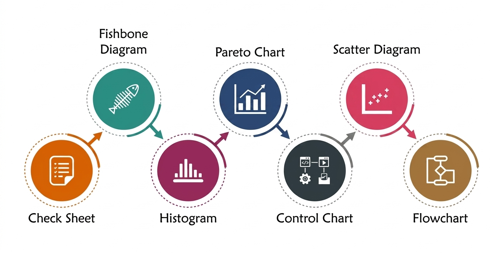

Simple and practical methods to identify problems, find root causes, and improve processes.
Quality tools are simple and practical methods used by project teams to identify problems, find root causes, and improve processes. These tools support better decision-making and help maintain consistent quality throughout the project.
Description: These seven tools were developed by Dr. Kaoru Ishikawa and are the foundation of quality management worldwide.
| Tool | Purpose |
|---|---|
| Cause-and-Effect Diagram (Fishbone) |
Identify root causes of problems |
| Check Sheet | Collect and track data |
| Control Chart | Monitor process performance over time |
| Histogram | Show data distribution and patterns |
| Pareto Chart | Identify the most important issues (80/20 rule) |
| Scatter Diagram | Show relationships between variables |
| Flowchart | Visualize processes step-by-step |

In addition to basic tools, teams use simple techniques to improve quality:
Identify root causes by repeatedly asking "why"
Analyze problems in depth
Plan–Do–Check–Act continuous improvement approach
Check work quality before delivery
Ensure requirements are correctly met
Team members can apply these tools in everyday work:
These practices help teams reduce errors, improve efficiency, and deliver better results.